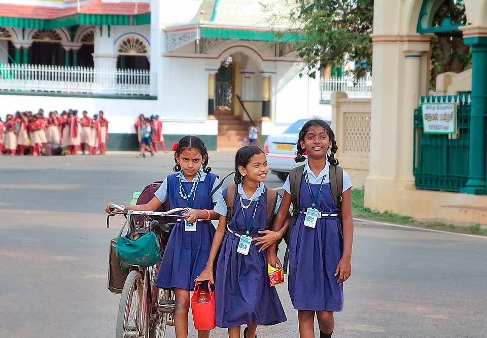

01 · LEARNING
Education & everyday confidence
Learning can open access to information, choices and new connections. Activities may support continued learning, digital basics and the confidence to ask questions.
Possible starting points
- Learning support and study habits
- Digital and information literacy
- Mentoring and guidance conversations
A learning activity should match participants' interests, language and available resources.